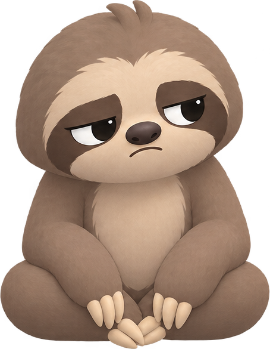

Melvin, 2026-09-21: 808 is about consistency. The Guide tab becomes Block (the guide moved to a circle under the streak on Home, already built). You pick when you want to meditate and which apps pull you away; Otto holds them in that window until you have sat. Opening one shows Apple's shield, "Ask Otto" sends a notification, and tapping it opens 808 to one of twenty ways Otto asks you to sit first. Every one ends in the same two doors: meditate now, or ask him for 5 to 60 minutes. The full brief is CONSISTENCY.md.
9:41●●●
Tell me when you want to sit.
I'll hold your apps till you do.
Mindful day
All day, every day
IGTTSC
held until you meditate
+ Add a blocker
Presets
Wind down
9 pm to midnight
Block tab. The valley on top, Otto with his clipboard saying the title, the blockers as cream cards on the grass. Presets underneath, like Brainrot's.
9:41●●●
CancelDelete

Mindful day
How often
MTWTFSS
When
All daySet hours
Apps Otto holds
IGTTSCRDChoose
How strict
ChillFirmStrict
Chill: Otto asks once, then you can have a few minutes.
Passes a day
123No limit
A session that counts
1 min2 min5 min10 min
A blocker's settings. Your three (how often, when, which apps) plus three I would add: how strict, how many passes a day, and the shortest session that counts. The switch turns it off.
7:12●●●
Otto's holding Instagram
Meditate first, or ask him for a few minutes.
Ask Otto
Close
Apple's shield. The one screen Apple draws: an icon, a title, a line and two buttons, nothing else. This is as rich as it is allowed to be.
7:12●●●
TIME SENSITIVE · 808
Otto wants a wordTap to talk it through
Otto's on his way
Tap the notification up top
The notification. A shield cannot open an app, so its button sends a notification. Brainrot does exactly this. Needs the Time Sensitive entitlement to break through Focus.
7:12●●●
Got two minutes for me
before Instagram?
Otto. One of the twenty below, chosen so it is never the same twice running. Meditating releases the apps for the rest of the window and feeds his glow.
7:12●●●
No worries. How long do you need?
5 min10 min15 min30 min1 hour
2 passes left today
Not now. Otto takes it well and asks how long. After that the apps are held again. On Strict this screen does not exist.
All end in the same two doors. Chill but convincing: he asks, he never scolds. The ones marked with a moment (morning, night, streak, friend) only show when they are true.
9:41●●●
Got two minutes
for me first?
1. Otto standing. One line.
9:41●●●
yo it's otto
quick meditation before the scroll?
ok let's go
later, open it
2. A text thread. Typing dots, then reply chips.
3. Otto FaceTimes you. Full screen, ringing.
9:41●●●
your front camera
yo, meditation o'clock
two minutes, i'll stay on
3, answered. You on the front camera, Otto in the corner.
4. Breathe with me. One breath before the choice.
9:41●●●
▶︎ ▂▅▇▃▆▂▅ 0:07
"hey, it's me. two minutes, then it's all yours. promise."
5. A voice note. Waveform and what he said.
9:41●●●
Sit first,
scroll after.
O.
6. A note on the fridge.
9:41●●●
It'll all still be here
in two minutes.
7. Still there later.
6:40●●●
zzz... oh, hey.
Morning meditation?
z z
8. Waking Otto. Morning only.
9:41●●●
Day 6 is waiting.
Two minutes keeps it going.
10. The streak. Only when there is one.
9:41●●●
Help me glow?
One session today.

11. His glow. The tamagotchi one.
9:41●●●
What do you want
more right now?

12. Two doors, playful.
9:41●●●
7
Instagram opens in 7 seconds
13. The countdown. Firm mode's friction.
7:02●●●
TODAY'S LINE
I start my day
on purpose.
14. An affirmation. Morning.
10:48●●●
Wind down with me?
Five minutes, then sleep.
15. Bedtime. Night only.
9:41●●●
sent you a sticker. join me?
16. A sticker.
9:41●●●
It's quiet out here.
Come sit a minute.
17. The valley.
9:41●●●
Maya sat 12 min
this morning
Maya already sat.
Join her?
18. A friend. Friends on only.
9:41●●●
Just one minute.
I'll keep time.
19. One minute. The smallest ask.
9:41●●●
What are you opening
it for?
BoredCheckingHabit
20. Otto asks why. Then the two doors.